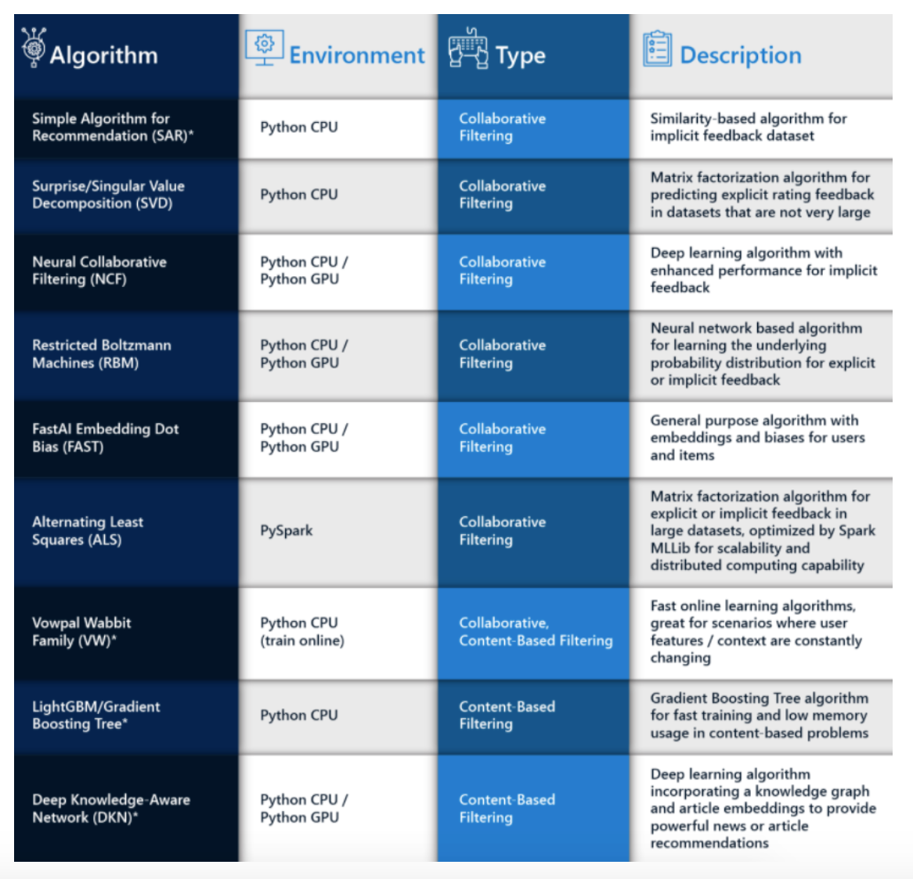
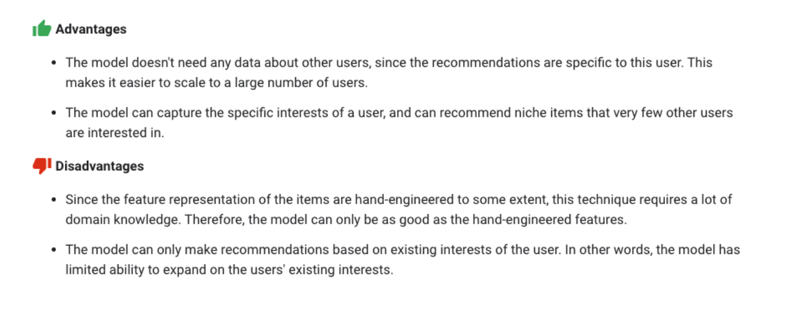
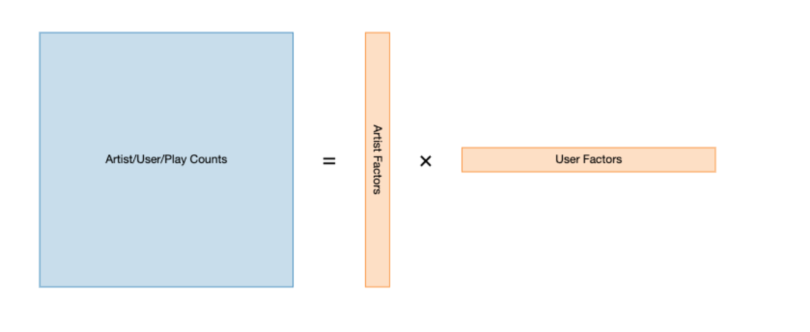
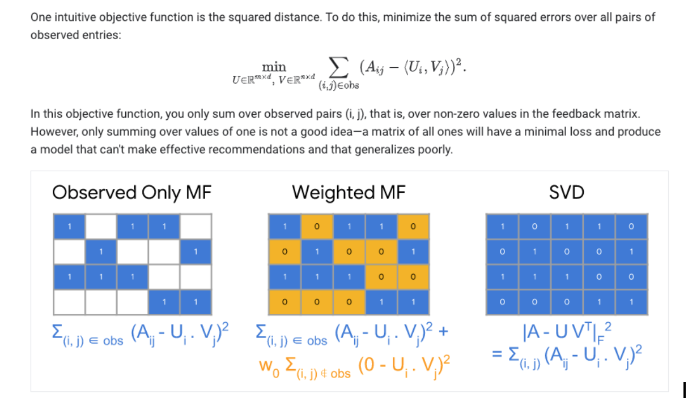
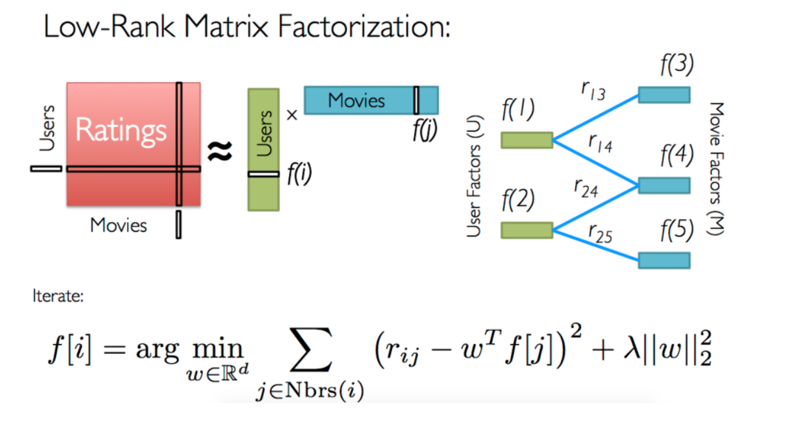

Algorithms Overview

Overview Diagram

Content-based filtering
Content-based filtering uses item features to recommend other items similar to what the user likes, based on their previous actions or explicit feedback.
Advantages vs Disadvantages

Collaborative Filtering
Collaborative filtering uses similarities between users and items simultaneously to provide recommendations.
Collaborative Filtering models can recommend an item to user A based on the interests of a similar user B.
In practice, the embeddings can be learned automatically without relying on hand-engineering of features, which is the power of collaborative filtering models.
We can apply Matrix Factorization to identify the relationship between users and items entities.
Data Sources
Explicit— users specify how much they liked a particular movie by providing a numerical rating.
Implicit— if a user watches a movie, the system infers that the user is interested.
Advantages vs Disadvantages

Matrix Factorization
The idea is to take the original user-item matrix, and then reduce that down to two much smaller matrices that approximates the original when multiplied together such that the loss between the multiplication of the two smaller matrices and the true user-item matrix is minimized (See Loss Functions Below)
Matrix factorization algorithm tries to find latent factors that represent intrinsic user and item attributes in a lower dimension
With Matrix Factorization we can throw away having to come up with features that connect users and items and instead use the user-item data we have to


Loss Function

The objective function is simply the sum of squared distances between predicted ratings and actual ratings, so this is what we need to minimize.
Common algorithm to minimize the loss function is Stochastic Gradient Descent
Regularization
But in order to prevent overfitting to the training data we need to constrain the learned values for our user and item features by penalizing high values.
We do this by multiplying the sum of the squares of the elements of the user and item matrices by a configurable regularization parameter and including this in our cost function.
Sparse Matrix
The ratings matrix is sparse, meaning most of the values are 0, because each user has only rated a small number of items.
The concept of a sparse matrix can actually be translated to a different data structure that retains only information about the non-zero values, making it a much more memory-efficient representation of the same information.
One way is to define a vector of row indices, i, a vector of column indices, j, and a vector of values for each (i,j) pair. So only the (i,j) pairs that have values are included. Using this format, known as coordinate list or COO, the above ratings would be expressed as follows:
Alternating Least Squares
The latent factor terms in the loss function are non-convex and therefore Gradient descent method can be applied but this will be expensive computations.
The ALS algorithm was developed to overcome this limitation.
ALS is to learn one of ‘w’ and ‘f’ at a time for optimization while keeping the other as constant. This makes the objective at each iteration convex and solvable.

Advantage:
Can be parallelised and/or distributed, which makes the algorithm desirable for use cases where the dataset is large and thus the user-item rating matrix is super sparse.
Implementation:
Scoring metric for explicit data: RMSE, MSE, R^2
The recommended items should be different from those that have been rated by the users
Prediction performance of a Spark ALS model is often affected by the parameters.
Implicit ALS
Link: https://www.benfrederickson.com/matrix-factorization